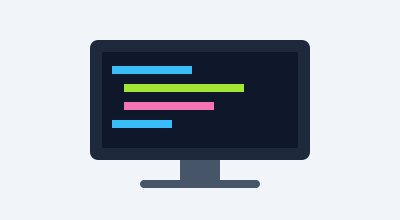

Автор: kustymenko | Опубліковано: 31 жовтня 2026
Час читання: ~5 хвилин
Веб-розробка — це одна з найцікавіших сфер IT у 2026 році. Якщо ви тільки починаєте, ці нотатки допоможуть зрозуміти з чого почати і куди рухатися далі.
Ми розглянемо основні технології, етапи навчання та практичні поради.
Кожна веб-сторінка стоїть на трьох технологіях:
Важливо! Вивчайте технології по черзі: спочатку HTML,
потім CSS, і лише після цього JavaScript.
Не варто братися за все одразу — так знання вийдуть
поверхневими.
Орієнтовний план для повного нуля:
Після основ можна обрати фреймворк для розвитку:
| Фреймворк | Мова | Складність | Популярність |
|---|---|---|---|
| React | JavaScript / TypeScript | Середня | Дуже висока |
| Vue.js | JavaScript / TypeScript | Низька | Висока |
| Angular | TypeScript | Висока | Висока |
| Svelte | JavaScript / TypeScript | Низька | Зростає |
Для оцінки складності алгоритмів використовують нотацію Big O:
O(n2) > O(n log n) > O(n) > O(log n) > O(1)
Наприклад, лінійний пошук у масиві має складність O(n), а бінарний — O(log2 n), що значно швидше для великих масивів.

Веб-розробка — це захоплююча подорож, що починається з простих HTML-тегів. Головне — почати, не здаватися та практикуватися регулярно.
Пам'ятайте стару мудрість:
«Шлях у тисячу лі починається з першого кроку»
З найкращими побажаннями,
kustymenko
Студент курсу «Вивчай»
* Дані про популярність фреймворків орієнтовні.
** Час навчання залежить від індивідуального темпу.